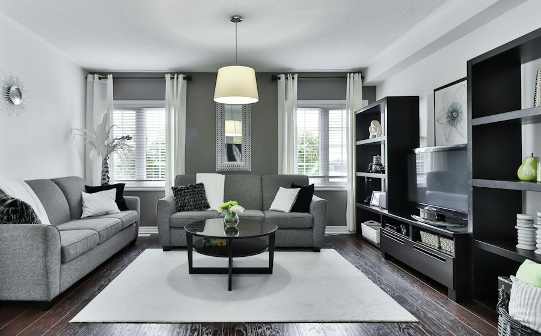
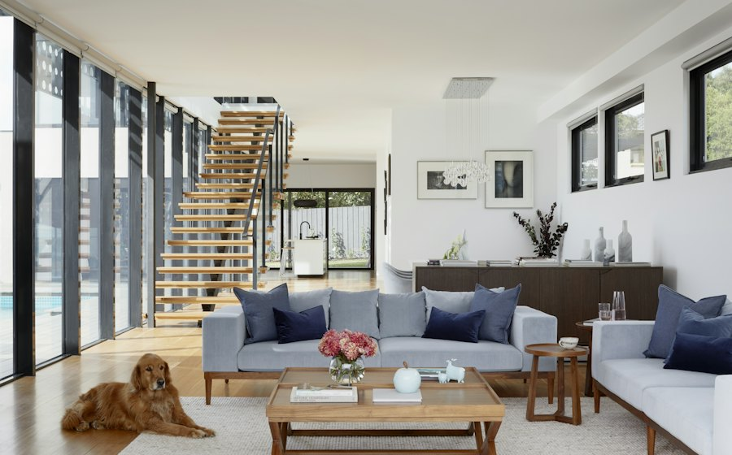
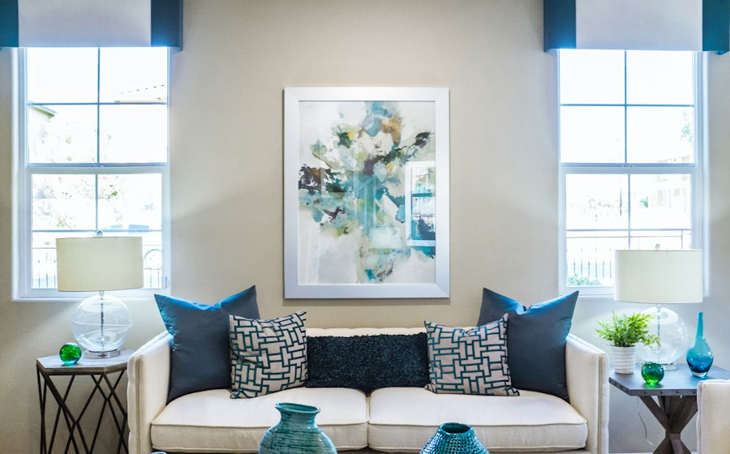
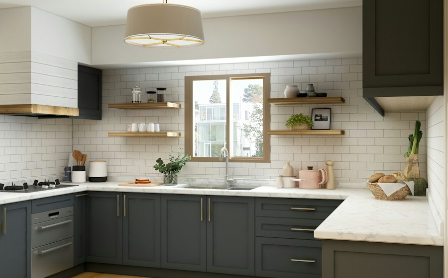
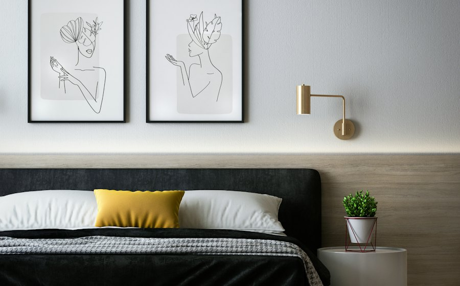

Mayur Vihar, Delhi
★ 4.8
Entire home · up to 4 guests
56 points
night

C-Scheme, Jaipur
★ 4.9
Entire home · up to 6 guests
72 points
night
Nobody wants your city
on your dates.
Your home
★ 4.8
Hosted once
56 points
night
Delhi
from 16 points night
Chandigarh
from 14 points night
Jaipur
from 16 points night
You don't swap with one person.
You swap with the network.
Delhi · 5–9 Nov · 4 nights
1BHK
2BHK
3BHK
Room + kitchen

Greater Kailash II
★ 4.9
Entire home · up to 4 guests
56 points
night

Sector 17, Chandigarh
★ 4.8
Entire home · up to 2 guests
40 points
night

Sector 35, Chandigarh
★ 4.6
Private room · up to 1 guest
14 points
night
56 points × 4 nights
224
Held on request
0
held until the host replies
Check-in
12 Nov
Check-out
16 Nov
Every room photographed twice.
houseswap
Your home is your ticket.
Pilot · Delhi, Chandigarh and Jaipur